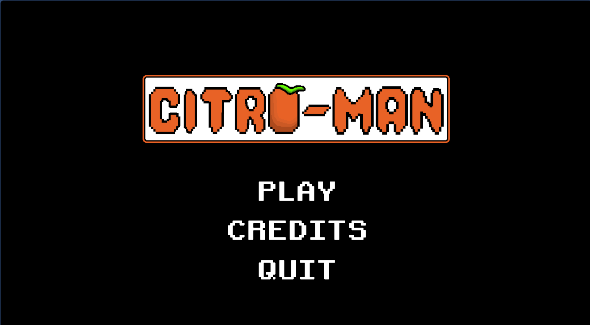
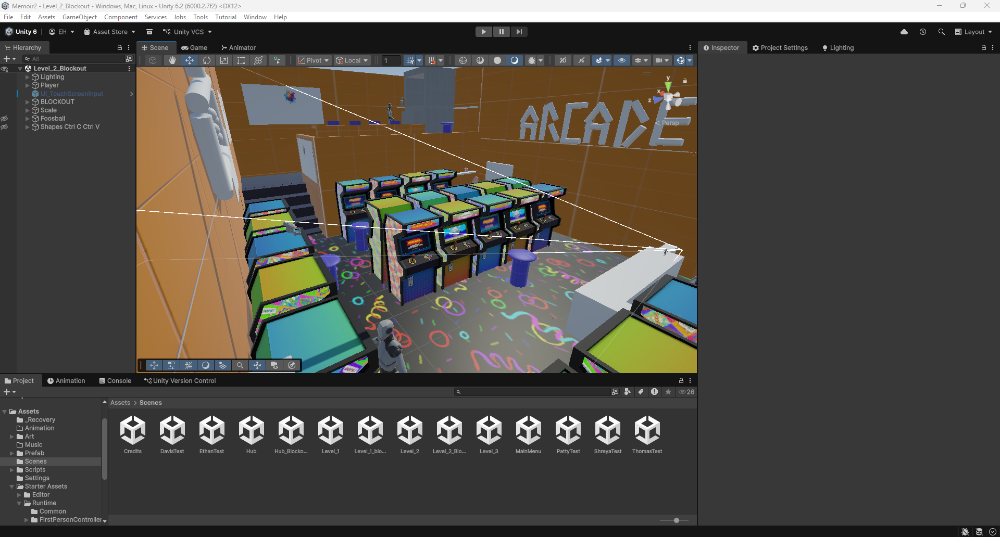
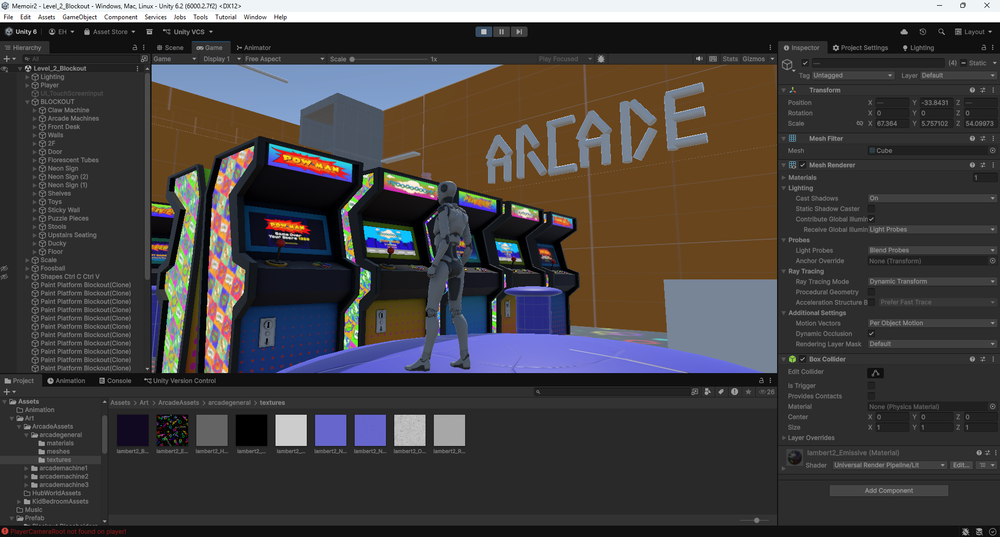
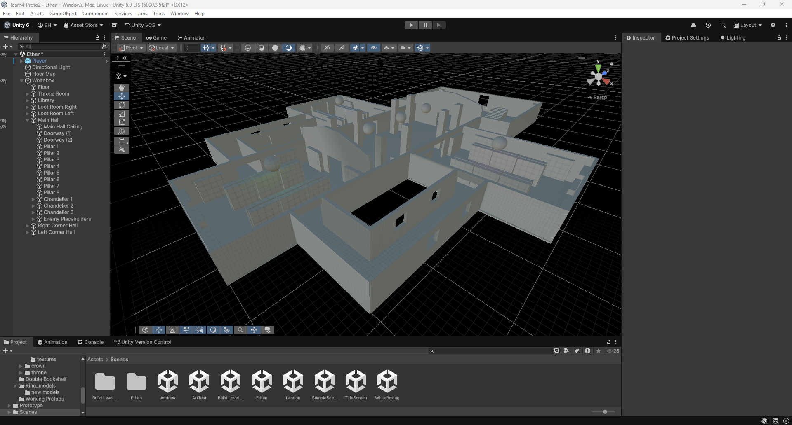
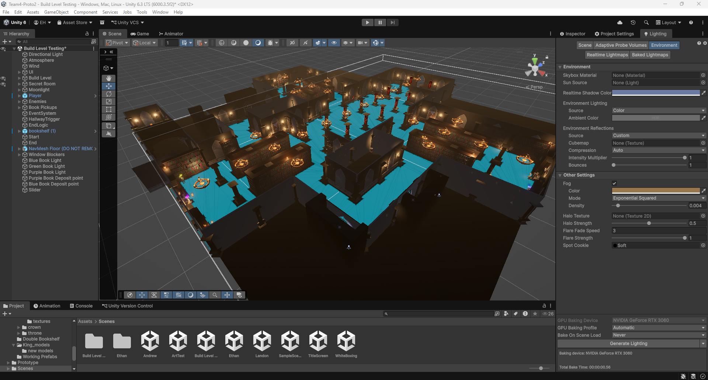
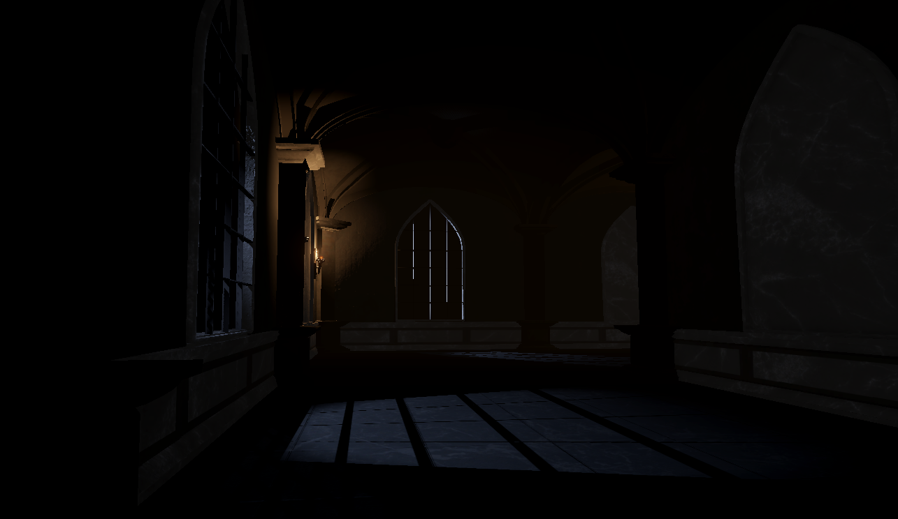
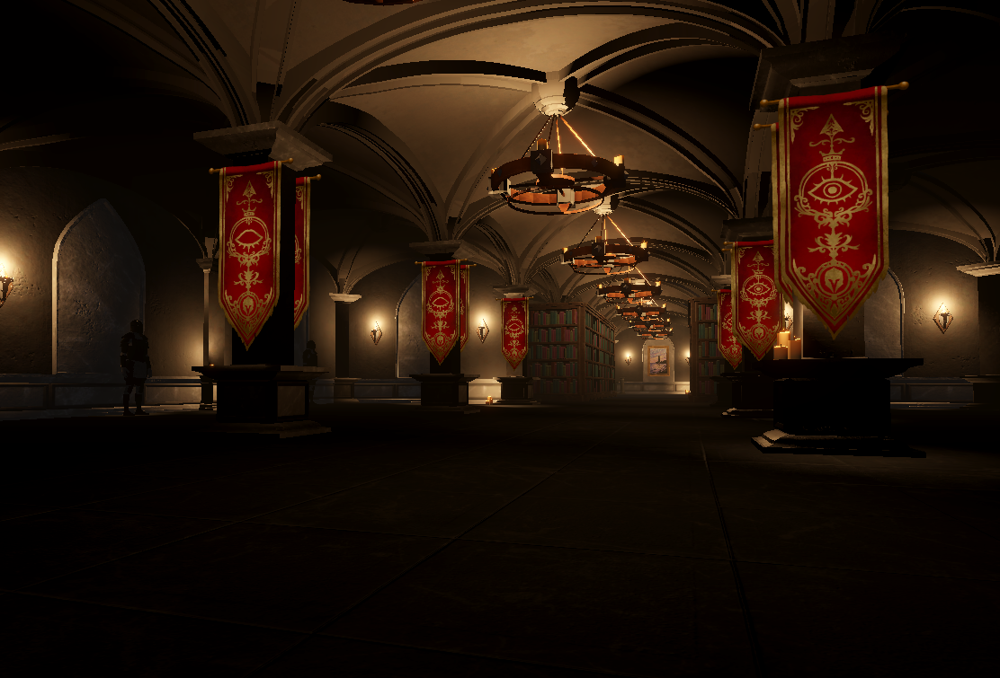
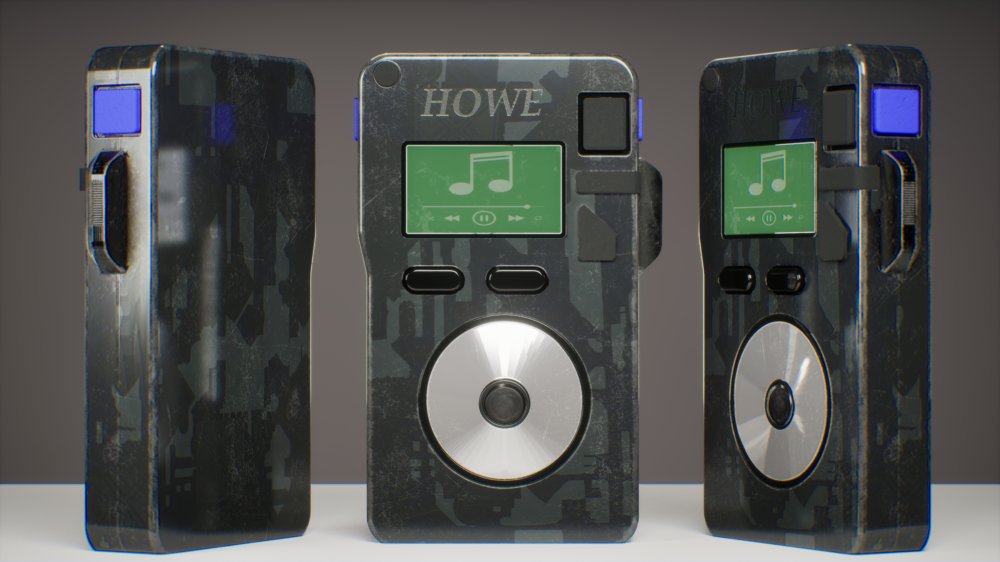
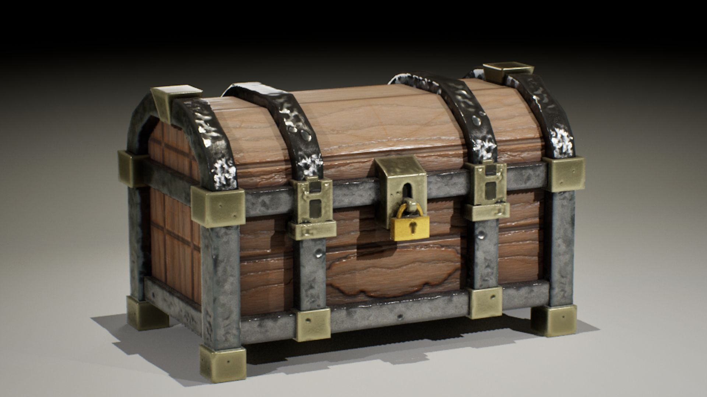
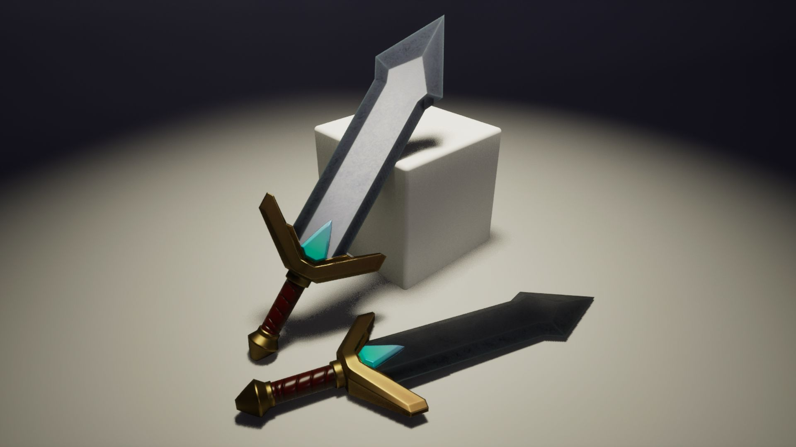

PROJECTS
Memoirs
MindMatters Studios
Role: Level Designer
Contributions: I am currently constructing our game's Arcade level.
Engine & Tools: Unity
Obscura
Three Choirs
Role: Level Designer
Contributions: I contributed towards the game's asset implementation, collisions, and environmental lighting, and made the initial whitebox and lean mechanic.
Engine & Tools: Unity & Microsoft Visual Studio
Citro-Man

PacBros
Role: Level & Systems Designer
Contributions: I created and painted the tilemaps, set up the collisions, assisted our programmer, and organized the project.
Engine & Tools: Unity, Microsoft Visual Studio, & Photoshop
LEVEL DESIGN
Memoirs


I am currently constructing the Arcade level for MindMatters Studios' Memoirs, balancing realistic spatial layout with readable, platforming-friendly traversal.
Obscura

I constructed the Whitebox for Obscura using ProBuilder, organizing the layout and scale for the game.

I constructed the finalized version of the Main Hallway, the complementary corner hallways, and Throne Room. I ensured the scale of all the rooms were consistent across the level, and connected the rooms together.

I set up environmental lighting and moonlight shafts through the windows to create a polarizing atmosphere, blending warm candlelight, cold moonlight, and silhouetted knights in the surrounding shadows.
I optimized light placement and amount across the level to improve both performance and player visibility.

3D MODELING

An MP3 Device created in Maya using the Boolean method workflow, textured in Substance Painter, and imported into Unreal Engine.

A Treasure Chest created in Maya using UDIM workflow, textured in Substance Painter, and imported into Unreal Engine.

A simple Sword created in Maya using High-to-Low workflow, textured in Substance Painter, and imported into Unreal Engine.